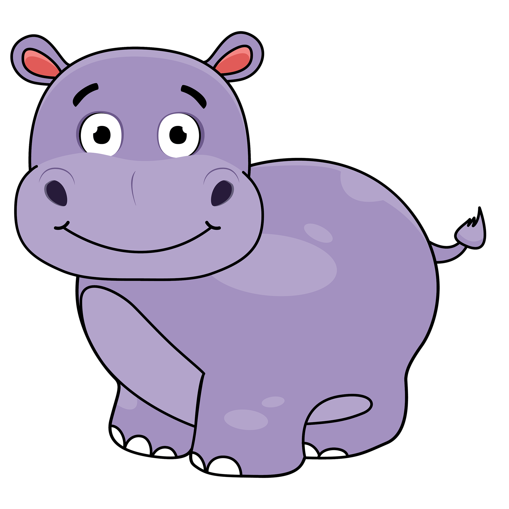

關於我

你好！我是一名專注於 Web 前端開發與使用者體驗設計的工程師。熱衷於將複雜的需求轉化為乾淨、易用且順暢的網頁介面。平時喜歡關注前端新技術、介面設計趨勢，並持續透過專案實作提升自己的能力。
我的專長
前端網頁開發
精通 HTML5、CSS3 與 JavaScript 語法，能快速建構結構清晰、語意化且易於維護的網頁架構。
響應式設計 (RWD)
靈活運用 Flexbox 與 CSS Grid，確保網站從行動裝置到桌上型螢幕都能呈現最佳排版與視覺體驗。
UI / UX 觀念與實踐
注重色彩對比度、字體排版與元件互動細節，致力於提供符合無障礙標準且直覺的操作體驗。